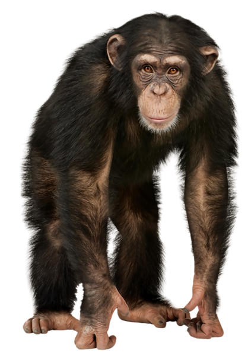

המילה "שימפנזה" מקורה במילה "קיבילי-צ'ימפנזה" באחת משפות בנטו המדוברת באנגולה, שמובנה "קוף אדם", וייתכן שפירושה המילולי "איש מחקה". באנגלית המילה מבוטאת "צ'ימפנזי" (chimpanzee) ולעיתים מקוצרת בלשון חיבה ל"צ'ימפ" (chimp). השם המדעי של הסוג Pan נטבע בשנת 1816 על ידי חוקר הטבע הגרמני לורנץ אוקן (Lorenz Oken; 1779–1851), על שמו של האל פאן המתואר במיתולוגיה היוונית בדמות סאטיר. במשך שנים רבות נחשב השימפנזה המצוי כמין היחיד בסוג שימפנזה, ולכן גם כיום מילה זו משמשת לעיתים קרובות לתיאור המין שימפנזה מצוי. בשנת 1929 תואר לראשונה המין השני בסוג – בונובו. במינוח מדעי "שימפנזה" הוא שם הסוג, אשר כולל את המינים "שימפנזה מצוי" ובונובו.
סוג השימפנזה הוא אחד מתוך ארבעה סוגים החיים כיום במשפחת ההומינידיים. שלושת האחרים הם הגורילה, האורנגאוטן והאדם. בעבר ייחדו משפחת ההומינידיים לאדם ולסוגים נכחדים הקרובים יותר לאדם מאשר לכל קוף אדם אחר, כמו אוסטרלופיתקוס, אך בשנות ה-60 חישובי קרבה על פי רצפי הגנום שלהם הראו לראשונה שקופי האדם הגדולים קרובים מאוד לאדם ואין הצדקה להפרידם למשפחה אחרת. לאחר שקופי האדם הגדולים הוכנסו למשפחת ההומינידיים התעורר צורך ביחידות טקסונומיות קטנות יותר שיבדילו בין שושלת האדם לשאר קופי האדם. יחידות אלו היו צריכות להתחשב בכך שלפי רצפי הגנום שלהם, סוג השימפנזה קרוב יותר לאדם מאשר לגורילה, והגורילה קרוב יותר לשימפנזה ולאדם מאשר לאורנגאוטן. לצורך זה הוצעו רמות השבט והתת-שבט. סוג השימפנזה מסווג לאותו שבט עם סוג האדם, אך יוחד לו תת-שבט נפרד – הפאנינים (Panina). שם זה נגזר משם הסוג הלטיני של השימפנזה Pan. כאשר מתעלמים מסוגים ומינים נכחדים ומציינים רק את אלו החיים בימינו, סיווג זה נראה כלהלן:
ההבדלים האנטומיים בין השימפנזה המצוי לבונובו מועטים. למרות שמו, הבונובו אינו קטן בהרבה מן השימפנזה המצוי, אך הוא בעל מבנה גוף קל ועדין יותר. משקלם של שימפנזים מצויים הוא 40 עד 60 ק"ג בזכרים ו-32 עד 47 ק"ג בנקבות. משקל הבונובו הוא בממוצע 39 ק"ג בזכרים ו-31 ק"ג בנקבות. הבדלים משמעותיים יותר בין שני המינים נמצאו בהתנהגותם החברתית והמינית. בלהקות שימפנזים מצויים הזכרים הם בעלי מעמד שליט על הנקבות, בעוד שבלהקות בונובו הנקבות בעלות מעמד שליט על הזכרים. נקבות הבונובו דומות לנקבות האדם בכך שהן מסוגלות להזדווג גם מחוץ לתקופת הביוץ שלהן, בעוד שנקבות שימפנזים מצויים, בדומה למרבית שאר נקבות היונקים, מתייחמות ומקיימות פעילות מינית רק בתקופת הביוץ. בונובו מרבים לקיים יחסי מין ביניהם, הטרוסקסואלים ולעיתים רחוקות הומוסקסואלים, לא רק לצורך התרבות אלא גם לחיזוק קשרים חברתיים, סיום סכסוכים או לצורך הנאה מינית. הם בעלי החיים היחידים מלבד האדם אשר לעיתים קרובות מזדווגים פנים אל פנים.